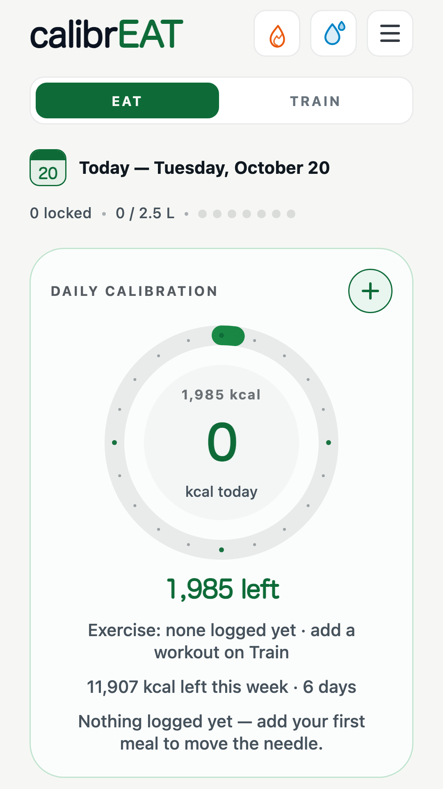
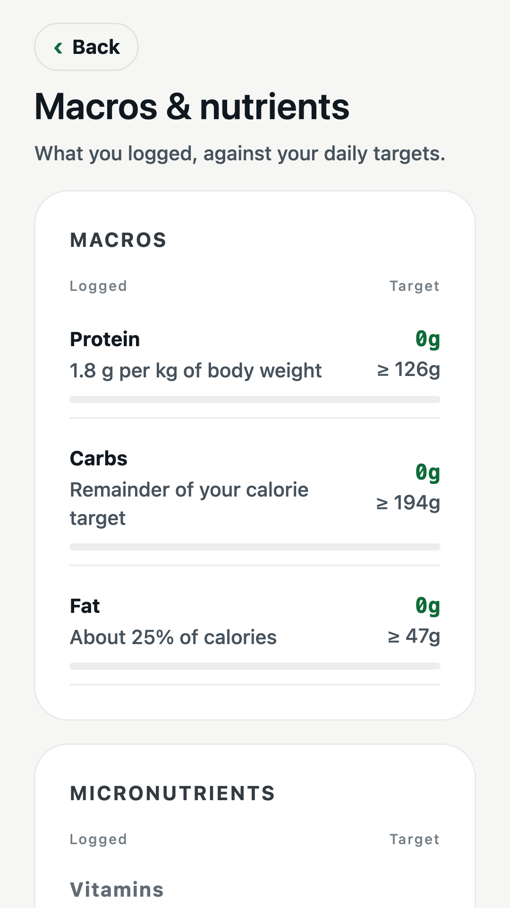
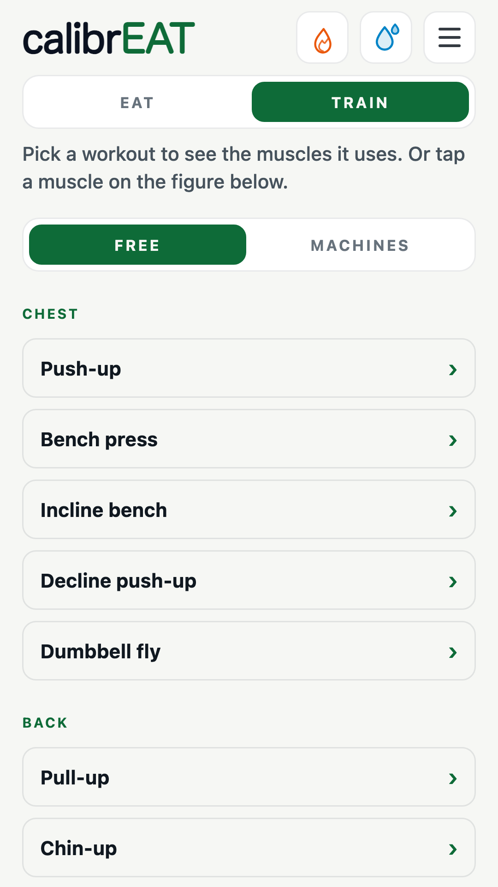
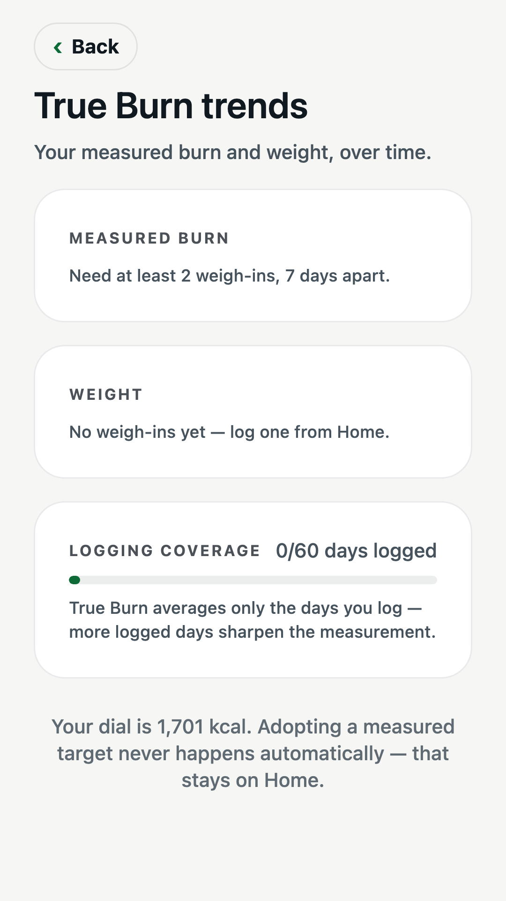

Your day, at a glance
Eat, train and weigh in
all in one place
Calories, water and your daily targets on a single home screen.

Eat
Macros and nutrients,
against your targets
See protein, carbs and fat, plus vitamins and minerals, as you log.

Train
Pick a workout,
see the muscles
Tap an exercise or a muscle on the figure to see what it works.

Trends
Measure your real burn,
not a guess
Track weigh-ins and logging over time. Your calorie target changes only when you choose.

calibr
EAT
Calibrate your eating lifestyle.